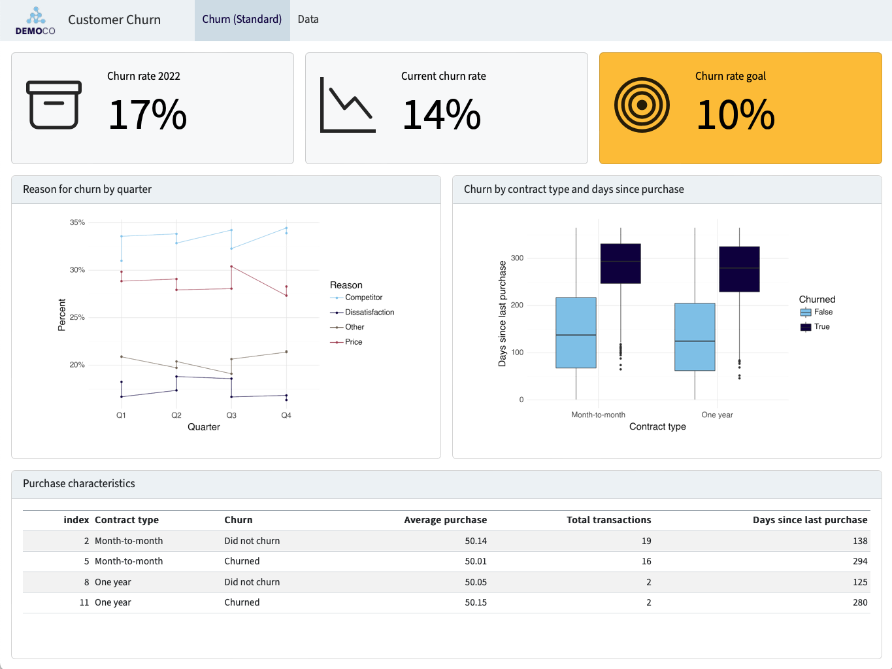
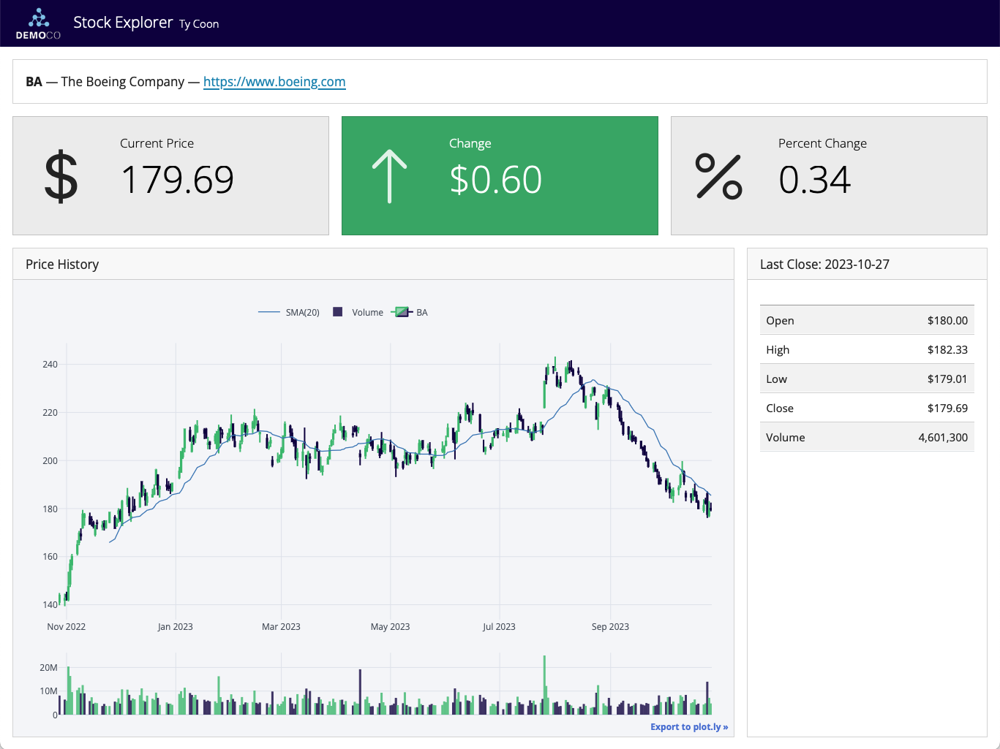
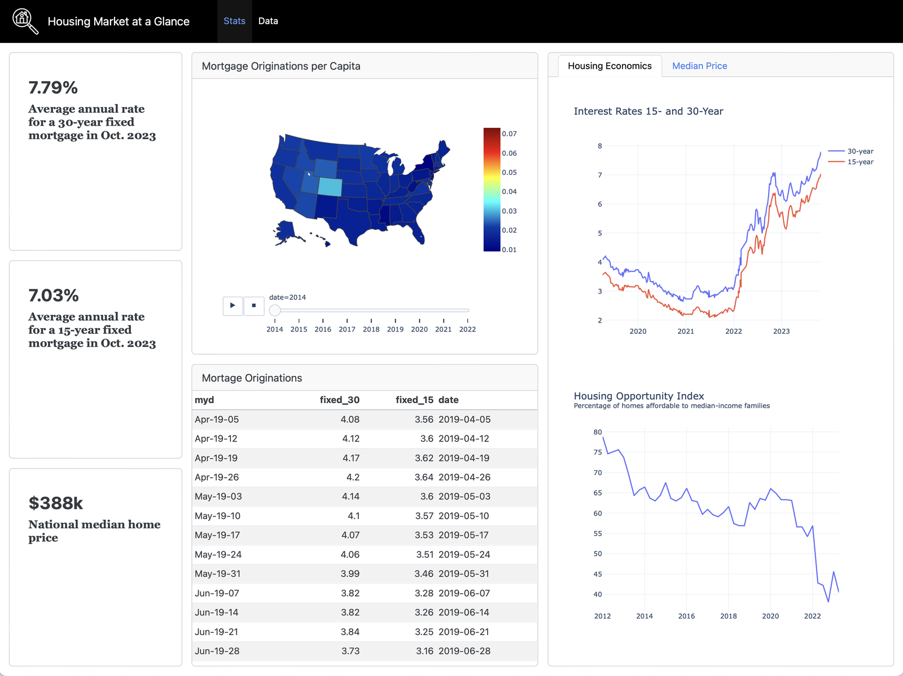

STA1000 - Data Analytics and Metrics
Five lectures in Tableau. You have the four families of figure, calculated fields, segments, and the design principles a stakeholder view has to meet.
Today you assemble them into the client deliverable, which is also Assignment 1.
By the end of this lecture you will be able to:
Open a blank page, not Tableau. Write one sentence:
This dashboard exists so that ______ can decide ______.
If you cannot finish the sentence, you are not ready to build. Everything that follows is judged against it: a view that cannot change that decision does not go on the page.
This is Lecture 1’s test, applied to a whole page rather than a single number.
Three broad types, and they are built differently:
| Type | Purpose | Design consequence |
|---|---|---|
| Monitoring | Is anything wrong right now? | Few numbers, large, with thresholds |
| Analytic | Why did this happen? | Filters, breakdowns, detail on demand |
| Communication | Here is what we found | Narrative order, written story, fixed conclusion |
Assignment 1 is a communication dashboard. It is read once, by somebody who was not in the room, and it has to end somewhere.
See Dashboard Design Patterns for the full taxonomy.
The order matters, and almost everybody gets it wrong by polishing too early.
Steps 1 and 2 decide whether the dashboard is any good. Steps 3 and 4 decide whether it looks it. Doing them in the other order wastes a weekend.
Five minutes, pen and paper, before step 2.
Reading order follows the decision, not the order you happened to build things in.
Most communication dashboards that work look similar, because Western readers scan the same way:
Convention is not a lack of imagination. It is how the reader finds the argument without being taught your layout first.

Three numbers at the top, the reasons underneath, the detail last. You can say what decision it supports in one sentence.
Focused

Dense

Both are competent. Only one of them can be read from the back of a room.
Every chart must earn its place by changing a decision. The usual offenders:
A dashboard is what is left after the removals. Assignment 1 is marked on storytelling, and a story with seven endings has none.
Every dashboard in this module carries three things. Images, buttons and menus are optional; these are not.
Most student dashboards have the third and neither of the others, and lose marks on Overall Story for exactly that reason.
A title states the problem, asks a question, or is simply memorable enough to be read. Real examples from Tableau Public:
What a title is not: Dashboard 1, Instagram Analysis, or Loomrow Data. Those name the contents. Name the finding.
Introduction
The context. Who is Loomrow, what do they sell, what were they asking?
Analysis
Walk the reader through the visualisations, extracting the point of each. Link them: by time, by geography, by logic, by increasing complexity.
Conclusion
Summarise, then recommend. What should they do on Monday?
A conclusion that only summarises has stopped one step short of the job.
Three short paragraphs of text on the dashboard itself. Not a separate document, and not spoken over it.
For the Loomrow dashboard you are going to submit:
Swap with the person beside you. Can they say what your dashboard is for without you explaining it?
On a single worksheet, right-click / ⌃ Control + click a field and choose Show Filter to put a control beside the view.
The difference matters for percentages. Filter to reels and the rates recompute among reels; highlight reels and the rates still include everything else.
The control that turns four charts into one dashboard. Dashboard → Actions → Add Action:
| Action | What it does |
|---|---|
| Filter | Selecting a mark in one view filters every other view |
| Highlight | Selecting a mark dims the non-matching marks everywhere |
| Go to URL | A mark becomes a link out |
| Parameter / Set | A selection changes a calculation |
Set the trigger (Hover, Select, Menu) deliberately. Hover actions on a dense chart are unusable; select is almost always the right answer.
The Marks card’s Tooltip button. What appears there is a design decision, not a default.
n fits without cluttering the chartbehind the scenes becomes Behind the scenes without editing the dataYear > Quarter > Month > Day) gives you drilldown for free. Use Week for portfolio-scale dataFile → Save to Tableau Public As…, and the workbook uploads to your profile.
Everything you publish is public. Do not upload anything confidential, and check what is in the data before you press it. This is a real habit, not a classroom rule.
Publishing is also saving. Publish at the end of every working session, and rename versions so you can go back.
.twbx, for someone who will edit itThe dashboard is finished when somebody can open it without you in the room and reach the conclusion you intended.
Test it properly: send the link to someone outside the module, say nothing, and ask them what they think it says.
Most dashboards fail this test on the title and the missing story, not on the charts.
Anything you know about the data that would change how it is read goes on the dashboard, in small text, not in your head:
attributed_revenue_eur is what the platform claims, not what was auditedA caveat you disclose is professional. The same caveat found by your reader is a credibility problem. We come back to this in Lecture 20.
A Tableau Public dashboard built on insta-data.csv, answering Loomrow’s two questions. Marked in four equal parts:
| Criterion | 25% each |
|---|---|
| Creativity | Menus, filters and interactions that do something |
| Analytical depth | Figures that answer a question worth asking |
| Design | Layout, colour, typography, restraint |
| Overall story | Title, narrative, and a conclusion with a recommendation |
Submit the Tableau Public link. Not a story, not a PDF, not a workbook file. Due mid-November.
Build. Checkpoints, in order:
Where we are on the module’s AI spine, set out in Lecture 1 and named properly in Lecture 12:
Chat with context. Attach the thing. A screenshot of your dashboard is context.
An assistant cannot build a Tableau workbook. It is good at the step before and the step after.
“My dashboard supports this decision: [your sentence]. Propose a layout: which views, in what order, above and below the fold. Say what to leave out.”
And afterwards, on a screenshot:
“Here is the dashboard. Read it as a client who has ninety seconds. What do you think it is telling me to do?”
Give it your list of built views and ask which one does not change a decision.
It is better at removing than you are, for one reason: it is not attached to the work. You spent two hours on that map.
Cut at least one view it names, even one you disagree about, and look at the dashboard again before you decide.
Asked “is this dashboard good?”, it will say yes. Ask it what the dashboard is telling you to do instead: that question has a wrong answer, so it is worth asking.
If its answer is not your recommendation, the dashboard is wrong, not the assistant.
Block 2 closes here. Next week Block 1 of Semester 2 opens: you stop analysing data somebody else generated and start generating your own.
You will build a website.